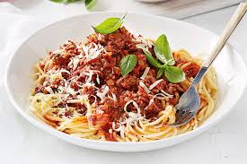

Spaghetti

Ingredienten
- 1 middelgrote ui
- 250g winterpeen
- 1 stengel bleekselderij
- 2 eetlepel milde olijfolie
- 25g ongezouten roomboter
- 1 eetlepeltomatenpuree
- 500g mager rundergehakt
- 2 eetlepels olijfolie
- 90ml runderbouillon
- 800g tomatenblokjes in blik
- 300g spaghetti
bereiding
-
Snipper de ui. Schil de winterpeen en snijd in plakjes. Snijd de
bleekselderij in boogjes. Verhit de olie met de boter in een pan, voeg
de ui, peen en bleekselderij toe en bak 5 min. op middelhoog vuur. Voeg
de tomatenpuree en het gehakt toe en bak in 5 min
-
Voeg de bouillon en tomatenblokjes erdoor. Breng op smaak met peper en
eventueel zout. Breng aan de kook en laat de saus met de deksel op de
pan 30 min. op laag vuur sudderen. Roer af en toe.
-
Kook ondertussen de spaghetti volgens de aanwijzingen op de verpakking.
Verdeel de spaghetti over de borden en schep de saus erover.